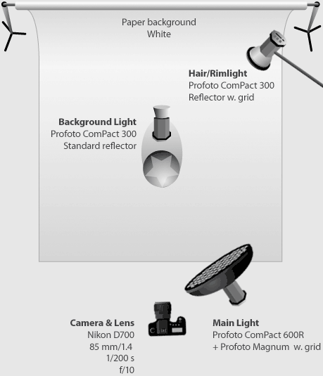

Hard light is light that contains very sharp, immediate transitions for highlights to shadows. the edges of the shadows woll be clearly shown and "hard".
Also, there will be a stark difference between the darkest and lightest areas of the image. the contrast between the two will be highly defined since you will know exactly from where the light stops and the shadows begin.

What is soft light?
In contrast, soft light transitions gradually from light to shadow. The greater the softness, the more gradual the transition.
The edges of the shadows will be gentle and the light will seem to "wrap" around subjects.
It is easier to distinguish between hard light and soft light, by looking at the transition between light and shadow in your scene.